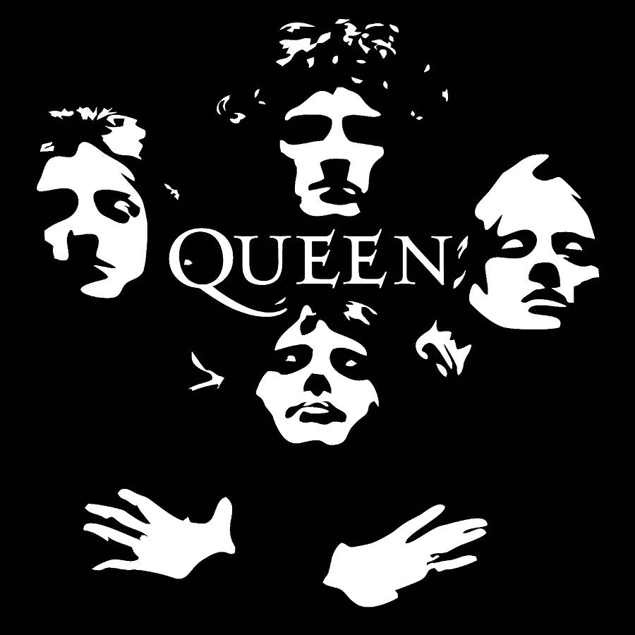

Queen is my all-time favorite band. I have seen them in concert (sadly without Freddie Mercury)
and have all of their albums on vinyl.
My favorite songs by them are: "Bohemian Rhapsody, Don't Stop
Me Now, '39, Play the Game, You and I, and Love of my Life".
Another classic band I love is The Beatles. Since I was little, I have appreciated their music.
The first song I learned on guitar was Blackbird!
My favorite songs by them are: "Blackbird, I Want To Hold Your Hand, All My Loving, I Will, and Boys".

A newer love of mine is Olivia Rodrigo. I love the fun but also heartfelt songs she writes.
My favorite songs by her are: "Stranger, Obsessed, and So American".
Abba is a childhood classic for me. The unmatched vibes from their music are one of the reasons Mamma Mia is my comfort movie.
My favorite songs by them are: "Voulez-Vous, Under Attack, Kisses of Fire, Lay All Your Love On Me, and Why Did It Have To Be Me".
Bruno Mars' wide range of fun but also emotional music is what makes him one of my favorites.
My favorite songs by him are: "When I Was Your Man, Natalie, The Other Side, Runaway Baby, and Somewhere in Brooklyn".
Rex Orange County's music is my go to study music. Whenever I need to lock in, I put his albums on repeat
My favorite songs by him are: "Television/So Far So Good, Never Enough, Pluto Projector, and Loving is Easy".

I only listen to country music occasionally, but when I do, it will be Tyler Childers. There is just something about his songs that are so addicting.
My favorite songs by him are: "Feathered Indians, Universal Sound, and Tattoos".

One of my favorite concerts is Billy Joel. Even at his age, he still knows how to put on a show. His music gives me such nostolgia and he has no misses.
My favorite songs by him are: "Vienna, Zanzibar, The River of Dreams, Scenes fron an Italian Restaurant, and Movin' Out".

Niall Horan combines carchy melodies with heartfelt lyrics and I love his unique blend of pop and folk. His music always feels genuine and comforting
My favorite songs by him are: "Too Much To Ask, Seeing Blind, Everywhere, and This Town".